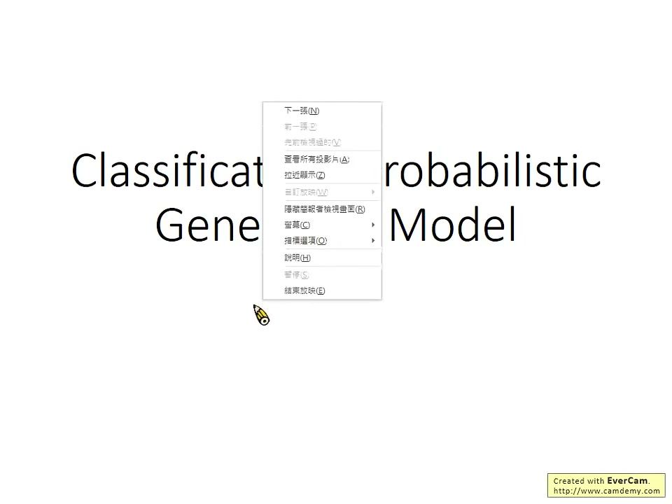
1:09:40一节真实的课 · 1 小时 9 分 40 秒
把视频整理成笔记
预览视频
或把本地视频拖进窗口
https://www.bilibili.com/video/BV1Wv411h7kN?p=16
提取画面
截图 0 / 69
00:00
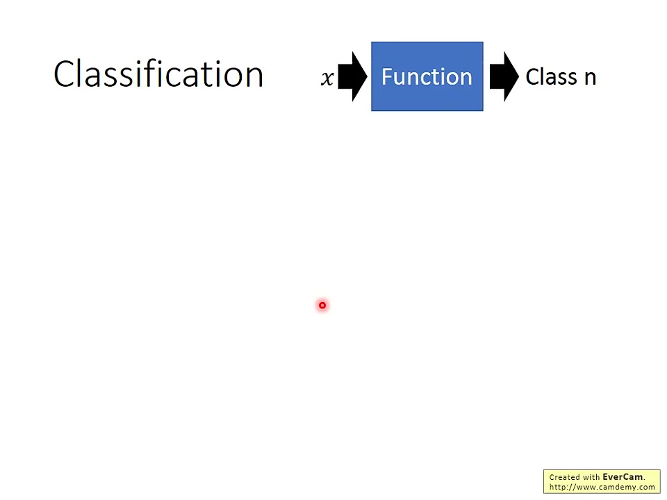
00:15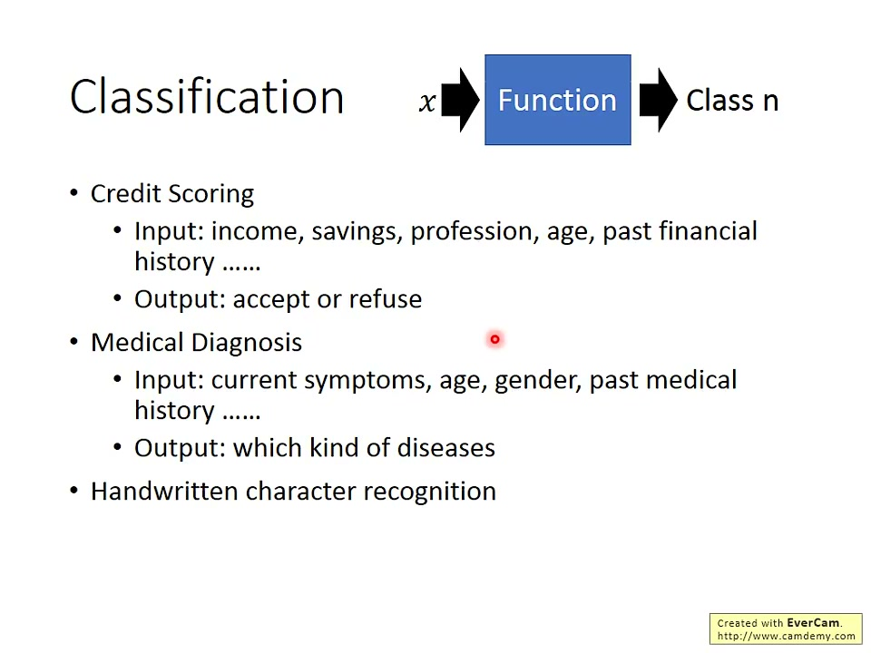
01:1602:03
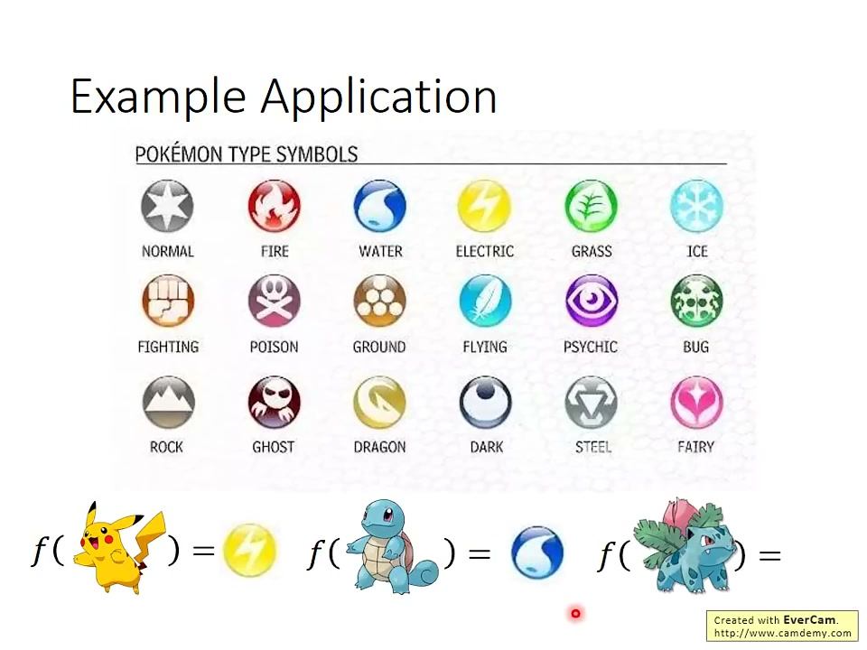
02:5604:26
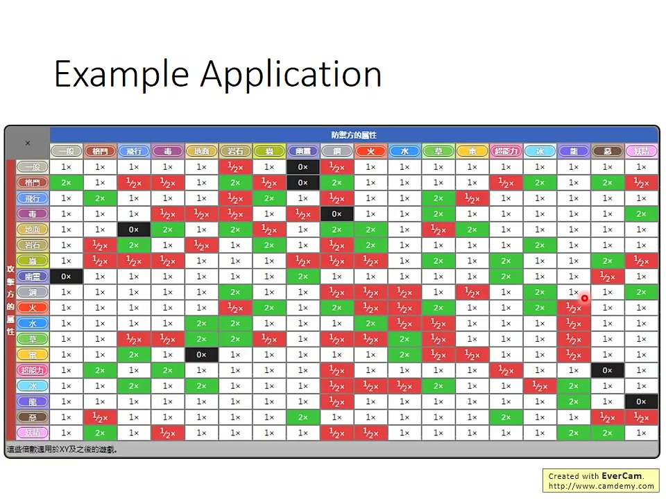
05:19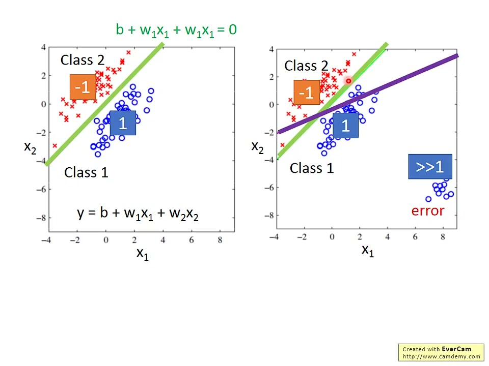
11:24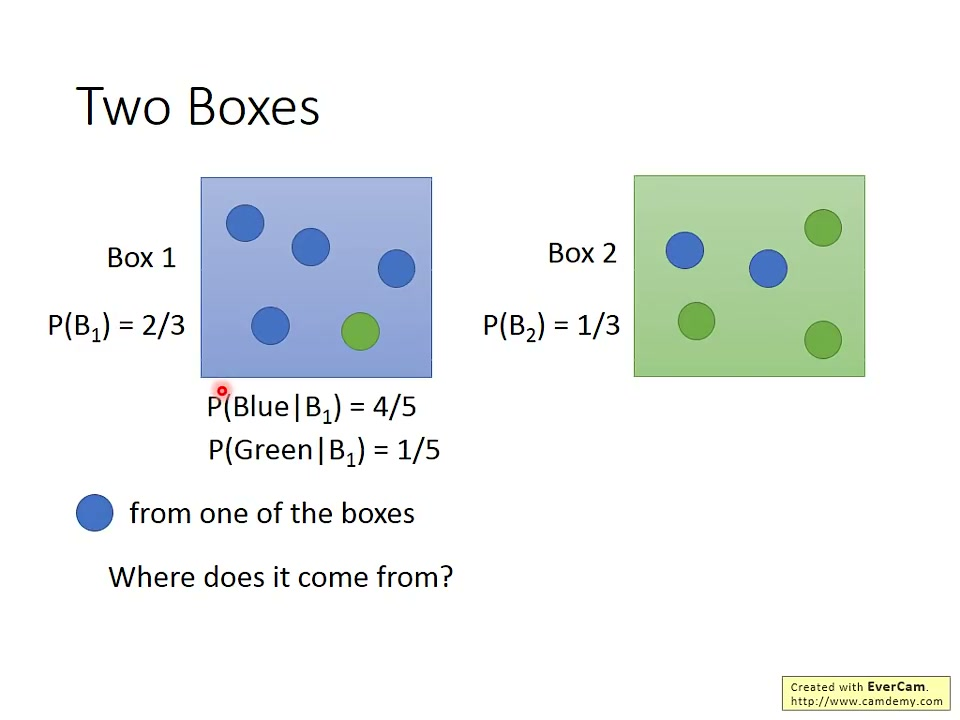
16:53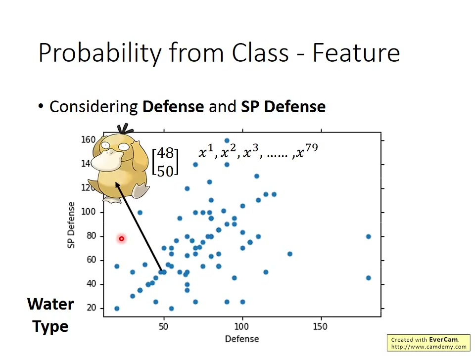
25:15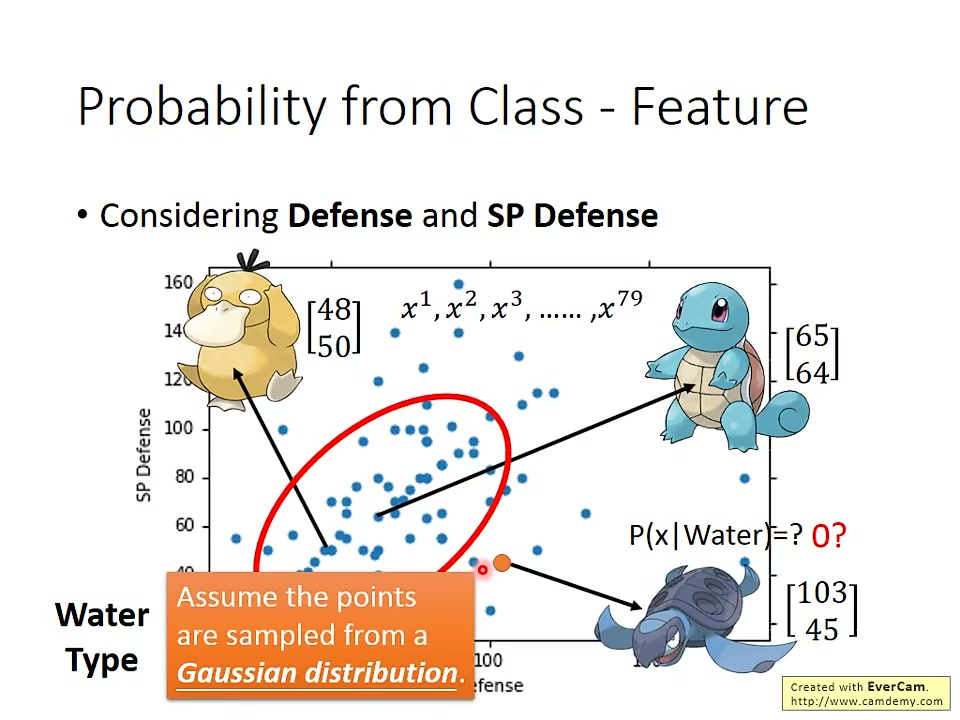
26:53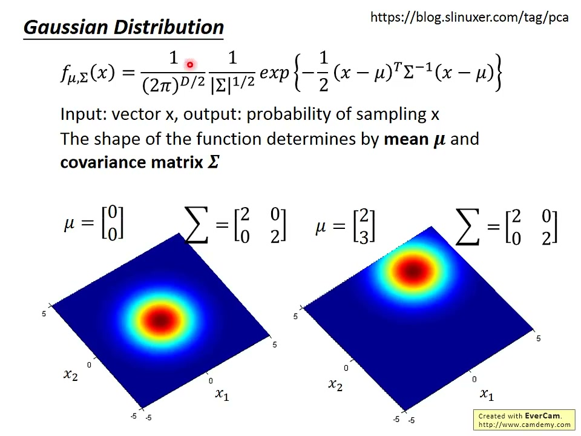
27:15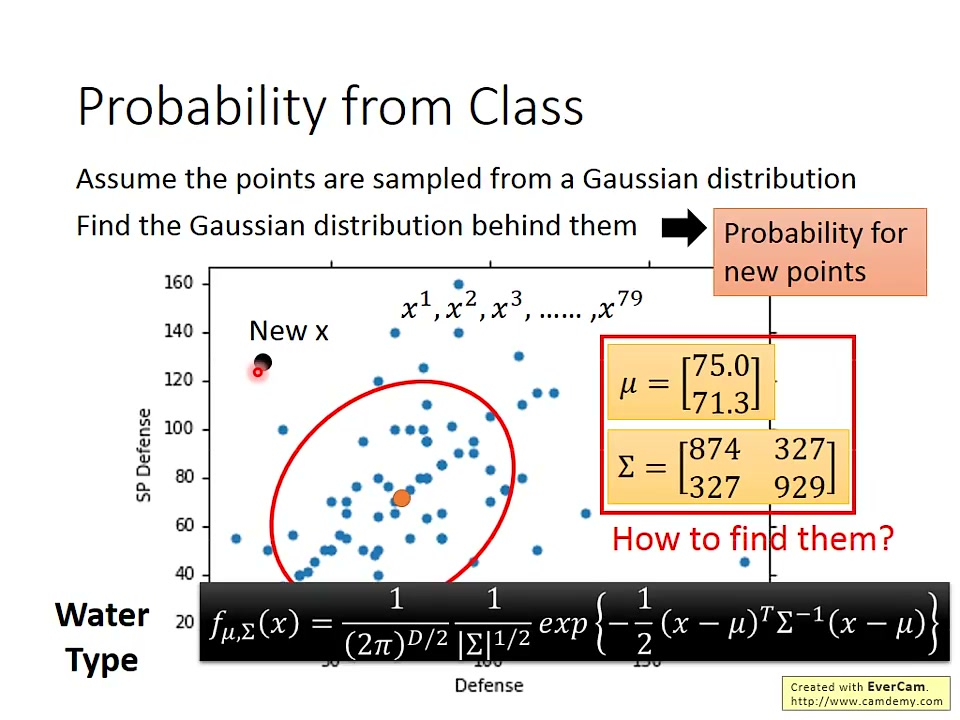
30:4240:01
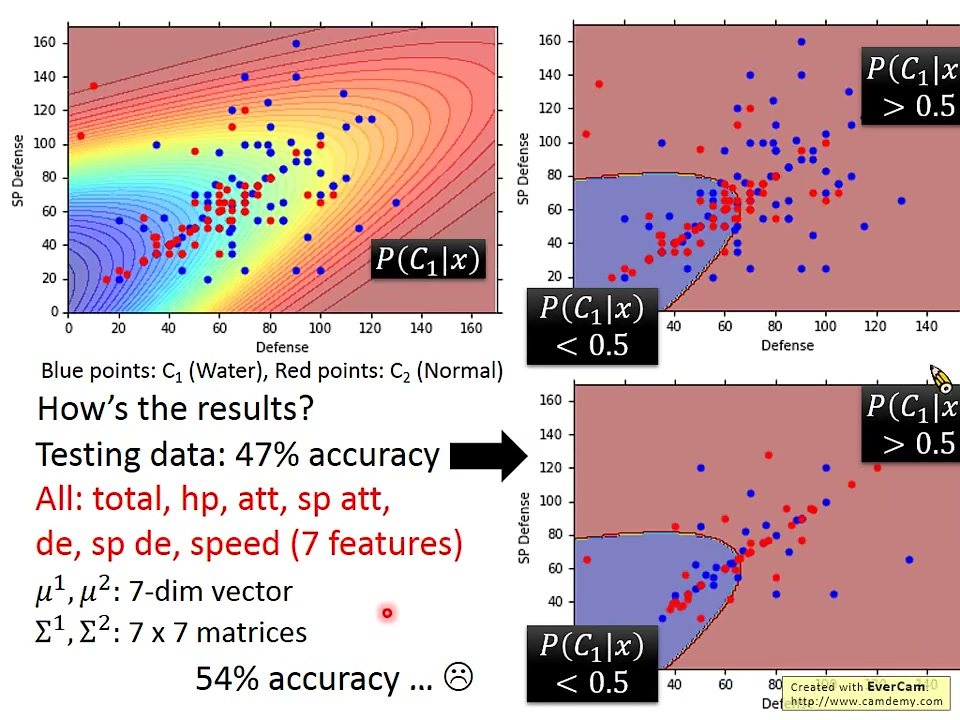
43:40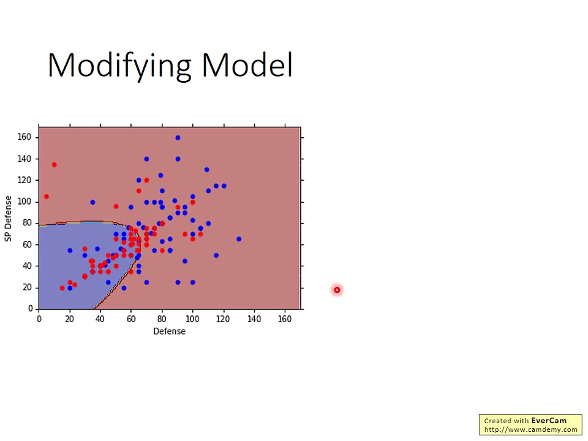
49:44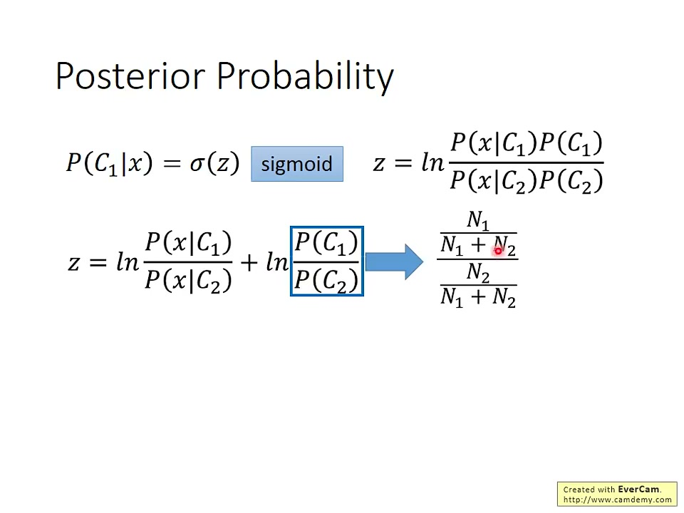
1:01:32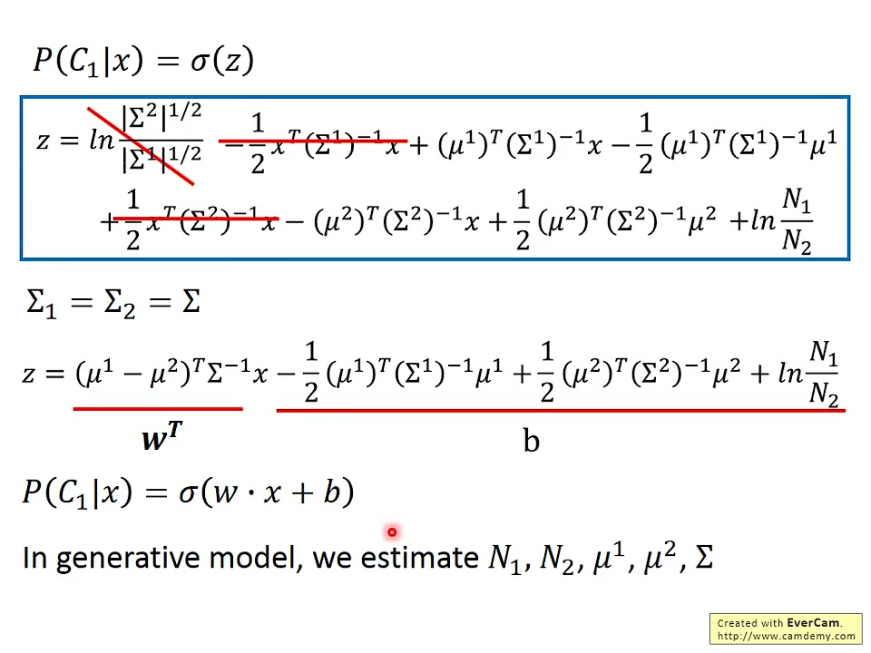
1:08:4504:26
截图 8 / 69 · 04:26 – 05:14
视频字幕
04:26比如說，皮卡丘
04:28它整體強的程度是 320
04:31它 HP 是 35，攻擊力是 55
04:34防禦力是40，特殊攻擊力是 50
04:37然後，它的特殊防禦力是 50，速度是 90
04:42所以一隻皮卡丘，我們就可以用一個 vector 來描述它
04:46這個 vector 裡面總共有 7 個數值
04:49所以，1 隻寶可夢，它就是 7 個數字所組成的一個 vector
04:56所以 1 隻皮卡丘，可以用這 7 個數字來描述它
04:59我們現在要問的問題就是
原始字幕
可选 · 默认关闭
比如說，皮卡丘它整體強的程度是 320它 HP 是 35，攻擊力是 55防禦力是40，特殊攻擊力是 50然後，它的特殊防禦力是 50，速度是 90所以一隻皮卡丘，我們就可以用一個 vector 來描述它這個 vector 裡面總共有 7 個數值
比如說，皮卡丘整體強的程度是 320，HP 是 35，攻擊力是 55，防禦力是 40，特殊攻擊力是 50，特殊防禦力是 50，速度是 90。所以一隻皮卡丘，我們就可以用一個 vector 來描述它，這個 vector 裡面總共有 7 個數值。
视频摘要
以寶可夢屬性分類介紹機率生成模型，從迴歸的限制、貝氏分類與高斯參數估測，推進到共用共變異數的線性邊界及 sigmoid 後驗機率，最後引出直接學習分類參數的構想。
笔记库 · 李弘毅机器学习(选修)To Learn More - 分类神奇宝贝Pokemon
目录
摘要
分類任務與寶可夢資料00:00
直接套用迴歸的問題07:47
貝氏分類與生成模型16:08
高斯假設與最大概似估測24:26
分類實作與初步結果36:24
共用共變異數與模型簡化42:30
模型選擇與 Naive Bayes52:07
後驗機率的 sigmoid 表示59:13
從共用共變異數推導線性邊界1:04:32
引出直接學習分類參數1:08:45
00:15
01:16 从此处观看
比如說，你手寫一個字給機器看，看到這張圖，這是「金」。然後，output 就是這個字、這個 image 屬於哪一個 class。如果你是做中文的手寫辨識，中文有至少 8000 個 character，那就是一個 8000 個 class 的 classification。
01:16
其實這個也是寶可夢的例子。我們知道寶可夢有不同的屬性，有 18 種屬性，包括水、火、電，還有草、冰等等。我們現在要做的是一個分類的問題，就是要找一個 function。
直接套用迴歸的問題07:47
11:24
去做 Regression 的時候，你得到的線不會是綠色這條。雖然你用直覺、用眼睛一看，就會知道綠色這條是一個比較好的 boundary。
貝氏分類與生成模型16:08
16:53
在盒子 1 裡面，藍球占 4/5，綠球占 1/5……
复制整份笔记 · Markdown 文本
复制整份笔记 · 纯文本
导出 Markdown（含截图，.zip）…
导出网页文件…
导出 JSON 数据…
course.md
cover.jpg
frames/69 张
exports/
course.zip含截图